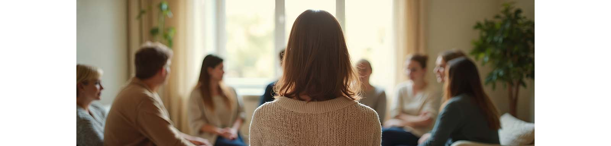

Our Mission
Empowering everyday people to explore and address their relationship with alcohol and other drugs in a compassionate, judgement‑free space. By blending lived experience, professional counselling, and flexible, affordable group sessions, participants will discover their own answers and understand how their relationships with their family, work, and life have been impacted—without putting their lives on hold.
Is This Program for You?
- Do you ever wonder if alcohol or other drugs are negatively impacting your life?
- Have loved ones expressed concern about your drinking or drug use?
- Do you ever wonder “What is happening to me?”?
- Are you afraid or ashamed to talk to others about how you truly feel?
- Are you curious to see how “going dry/clean” could feel—without committing to a residential rehab?
- Are you able to meet in person in our Bayside location Mon/Wed/Fri 4‑7 pm for 4 weeks?
If any of these resonate, Revise Your Life can help you discover answers in a safe, supportive space.
What You’ll Gain
- Clarity about how substances affect your health, relationships and performance.
- Evidence‑based education and real‑world insights, delivered without moralising.
- Minimise fear and confusion and gain the freedom to address your fears in constructive and healthy ways.
- Peer support from people facing similar questions and realise that you are not alone.
- Optional one‑on‑one and family sessions to strengthen your support network.
How It Works
- Three hours per day, three days per week, for four weeks (4–7 pm).
- Small, confidential groups (maximum 10 participants).
- Interactive discussions and ideas to think about between sessions.
Why Choose This
- Led by a certified Alcohol & Other Drugs counsellor with 16 years of lived recovery.
- No insurance forms, medical records or labels—just honest conversation and practical guidance.
- Fits around work, family and life commitments.
Investment
- Cost: $1,200 (payable weekly: $300).
- Satisfaction guarantee: if it’s not for you after Week 1, simply stop—no further payment required.
- Many participants recoup the cost by not drinking alcohol or using drugs during the program.
Optional Extras
- Individual counselling: $100 per 1 hour session.
- Family counselling: $150 per 1 hour session.